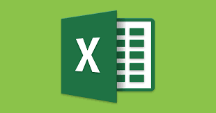
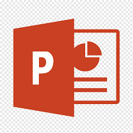
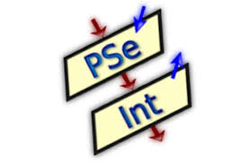
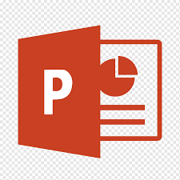
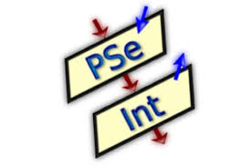
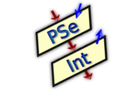

DESCRIPCION
es un procesador de textos desarrollado por Microsoft, ampliamente utilizado en todo el mundo para la creación, edición y formato de documentos
Este software permite a los usuarios redactar y diseñar desde simples cartas y currículums hasta complejos informes y publicaciones académicas.
EXCEL

DESCRIPCION
es una herramienta muy eficaz para obtener información con significado a partir de grandes cantidades de datos.
También funciona muy bien con cálculos sencillos y para realizar el seguimiento de casi cualquier tipo de información.
La clave para desbloquear todo este potencial es la cuadrícula de las celdas.
La función Y devuelve VERDADERO si todos sus argumentos se evalúan como VERDADERO y devuelve FALSO si uno o más argumentos
se evalúan como FALSO . Un uso común de la función Y es expandir la utilidad de otras funciones que realizan pruebas lógicas
POWERPOINT

DESCRIPCION
es un software de ofimática diseñado para realizar presentaciones de diapositivas .
Fue creado a mediados de los años 80 y vendido en 1987 a Bill Gates, convirtiéndose en un producto estrella de la compañía Microsoft.
Cuando no se sabe cómo hacer algo en PowerPoint, es posible buscar la pregunta con la función Ayuda. Ayuda puede responder
preguntas, ofrecer consejos y proporcionar orientación para todas las funciones de PowerPoint .
PYTHON

DESCRIPCION
es un lenguaje de programación ampliamente utilizado en las aplicaciones web, el desarrollo de software, la ciencia de datos y el aprendizaje automático (ML).
Los desarrolladores utilizan Python porque es eficiente y fácil de aprender, además de que se puede ejecutar en muchas plataformas diferentes.
es una gran herramienta para escribir programas que automatizan tareas repetitivas, un proceso también
conocido como scripting. En concreto, puedes hacer scripts para trabajar con archivos y carpetas.
PSEINT

DESCRIPCION
es la abreviatura de “Intérprete de Pseudocódigo” y es una herramienta enfocada a facilitar el desarrollo de programas escritos en
un lenguaje de programación textual mediante un sencillo e intuitivo pseudolenguaje en idioma castellano, pero con la particularidad de
utilizar una sintaxis flexible e incluso
Este software pretende facilitarle al principio la tarea de escribir algoritmos en este pseudolenguaje presentando un conjunto de ayudas y asistencias,
y brindarle además algunas herramientas adicionales que le ayudarán a encontrar errores y comprender la lógica de los algoritmos.
DESCRIPCION
es una herramienta muy eficaz para obtener información con significado a partir de grandes cantidades de datos. También funciona muy bien con cálculos sencillos y para realizar el seguimiento de casi cualquier tipo de información. La clave para desbloquear todo este potencial es la cuadrícula de las celdas.
La función Y devuelve VERDADERO si todos sus argumentos se evalúan como VERDADERO y devuelve FALSO si uno o más argumentos se evalúan como FALSO . Un uso común de la función Y es expandir la utilidad de otras funciones que realizan pruebas lógicas
-

DESCRIPCION
es un software de ofimática diseñado para realizar presentaciones de diapositivas . Fue creado a mediados de los años 80 y vendido en 1987 a Bill Gates, convirtiéndose en un producto estrella de la compañía Microsoft.
Cuando no se sabe cómo hacer algo en PowerPoint, es posible buscar la pregunta con la función Ayuda. Ayuda puede responder preguntas, ofrecer consejos y proporcionar orientación para todas las funciones de PowerPoint .
PYTHON
DESCRIPCION
es un lenguaje de programación ampliamente utilizado en las aplicaciones web, el desarrollo de software, la ciencia de datos y el aprendizaje automático (ML).
Los desarrolladores utilizan Python porque es eficiente y fácil de aprender, además de que se puede ejecutar en muchas plataformas diferentes.
es una gran herramienta para escribir programas que automatizan tareas repetitivas, un proceso también
conocido como scripting. En concreto, puedes hacer scripts para trabajar con archivos y carpetas.
PSEINT

DESCRIPCION
es la abreviatura de “Intérprete de Pseudocódigo” y es una herramienta enfocada a facilitar el desarrollo de programas escritos en
un lenguaje de programación textual mediante un sencillo e intuitivo pseudolenguaje en idioma castellano, pero con la particularidad de
utilizar una sintaxis flexible e incluso
Este software pretende facilitarle al principio la tarea de escribir algoritmos en este pseudolenguaje presentando un conjunto de ayudas y asistencias,
y brindarle además algunas herramientas adicionales que le ayudarán a encontrar errores y comprender la lógica de los algoritmos.
DESCRIPCION
es un lenguaje de programación ampliamente utilizado en las aplicaciones web, el desarrollo de software, la ciencia de datos y el aprendizaje automático (ML). Los desarrolladores utilizan Python porque es eficiente y fácil de aprender, además de que se puede ejecutar en muchas plataformas diferentes.
es una gran herramienta para escribir programas que automatizan tareas repetitivas, un proceso también conocido como scripting. En concreto, puedes hacer scripts para trabajar con archivos y carpetas.
-

DESCRIPCION
es la abreviatura de “Intérprete de Pseudocódigo” y es una herramienta enfocada a facilitar el desarrollo de programas escritos en un lenguaje de programación textual mediante un sencillo e intuitivo pseudolenguaje en idioma castellano, pero con la particularidad de utilizar una sintaxis flexible e incluso
Este software pretende facilitarle al principio la tarea de escribir algoritmos en este pseudolenguaje presentando un conjunto de ayudas y asistencias, y brindarle además algunas herramientas adicionales que le ayudarán a encontrar errores y comprender la lógica de los algoritmos.